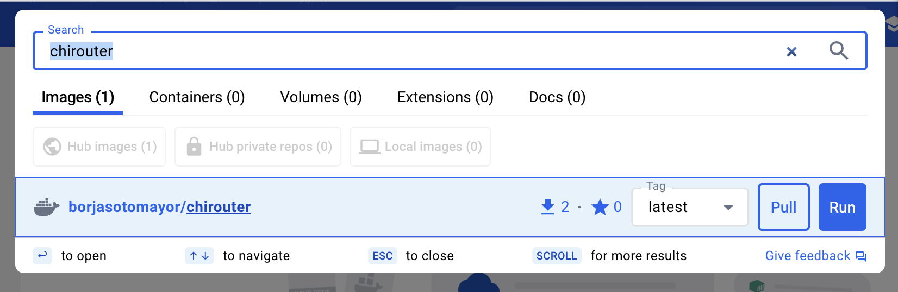
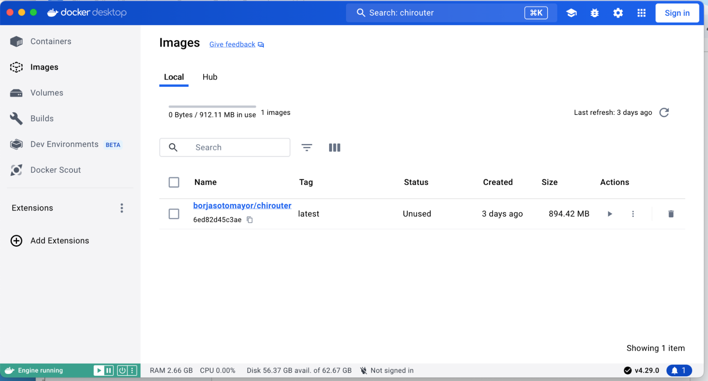
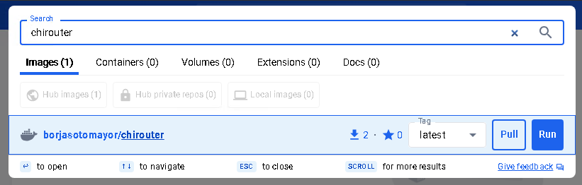
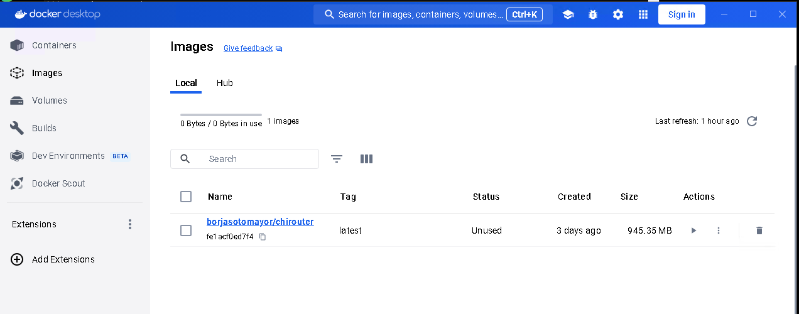

Installing, Building, and Running chirouter¶
The source code for chirouter can be found in the following GitHub repository:
https://github.com/uchicago-cs/chirouter
To work on the assignments, all you need to do is clone this repository. However, please note that your instructor may give you more specific instructions on how to get the chirouter code.
Building chirouter¶
To build chirouter, the only requirement is CMake (version 3.21 or higher).
The first time you download the chirouter code to your machine, you must run the following from the root of the chirouter code tree:
cmake -B build/
This will generate a number of files necessary to build chirouter.
Once you have done this, simply run make inside the build directory
to build chirouter. This will generate the chirouter executable.
This executable accepts the following parameters:
-p PORT: [Optional] Port that chirouter will listen on (the simulated network, described below, will connect to this port to send the router its configuration, and the Ethernet frames that arrive at the router). Defaults to 23320.-c FILE: [Optional] When specified, produces a capture file (in PCAPNG format) with all the Ethernet frames sent/received by the routers. This file can be opened in Wireshark for analysis.-v,-vv, or-vvv: To control the level of logging. This is described in more detail in Implementation Guide-q: Only print error messages.
Installing the chirouter Docker container¶
chirouter depends on the mininet network emulator to simulate the conditions of a real network. While it is technically possible to install mininet by itself, it is much easier to run a Docker container with all the necessary software. We provide such a container, and provide instructions below on how to install it and run it. The container works on both Intel/AMD computers and ARM computers (including Macs with Apple Silicon); Docker will automatically download the right version for your computer.
Please note that you will not run chirouter inside the container. Instead, you will run chirouter on your computer and the simulated network inside the container, and the simulated network will connect to chirouter.
Before performing these steps, make sure that you have built chirouter as described above.
MacOS / Linux¶
First of all, you will need to install Docker Desktop on Mac or Linux (on Linux, you can also use Docker Engine instead of Docker Desktop). You may be prompted to “sign up” for a Docker account. You are welcome to do so, but none of the steps below require a Docker account (you can just click on “Continue without signing in” when prompted to sign up for an account)
Once you’ve installed Docker Desktop, open it and, on the search bar, type in “chirouter”:

Click the “Pull” button next to “borjasotomayor/chirouter”
Once the download is complete, you should see the image appear in the “Images” section on Docker Desktop:

Alternatively, you can download the image by running the following in a terminal:
docker pull borjasotomayor/chirouter
Next, open two terminal windows. On the first terminal window, go to the
build directory of your repository, and run the following:
./chirouter -vv
You should see the following:
[2026-11-03 18:42:51] INFO Waiting for connection from Mininet...
On the second terminal, run the following from the root of your repository:
./run-docker basic
You should see the following:
*** Error setting resource limits. Mininet's performance may be affected.
*** Creating network
*** Adding hosts:
client1 client2 server1 server2
*** Adding switches:
r1 s1001 s1002 s1003
*** Adding links:
(client1, s1003) (client2, s1003) (r1, s1001) (r1, s1002) (r1, s1003) (server1, s1001) (server2, s1002)
*** Configuring hosts
client1 client2 server1 server2
*** Starting web server on host server1
*** Starting web server on host server2
*** Starting controller
*** Starting 4 switches
r1 s1001 s1002 s1003
*** Connecting to chirouter at host.docker.internal:23320
*** Starting CLI:
mininet>
If you look at the first terminal, you should see the following output:
[2026-11-03 18:42:52] INFO Mininet connected from 10.0.0.3:48054
[2026-11-03 18:42:52] INFO Received 1 routers
[2026-11-03 18:42:52] INFO --------------------------------------------------------------------------------
[2026-11-03 18:42:52] INFO ROUTER r1
[2026-11-03 18:42:52] INFO
[2026-11-03 18:42:52] INFO eth1 12:A3:1B:8D:52:62 192.168.1.1
[2026-11-03 18:42:52] INFO eth2 A6:0B:0F:02:33:92 172.16.0.1
[2026-11-03 18:42:52] INFO eth3 7A:46:EC:85:E2:22 10.0.0.1
[2026-11-03 18:42:52] INFO
[2026-11-03 18:42:52] INFO Destination Gateway Mask Iface
[2026-11-03 18:42:52] INFO 192.168.0.0 0.0.0.0 255.255.0.0 eth1
[2026-11-03 18:42:52] INFO 172.16.0.0 0.0.0.0 255.255.240.0 eth2
[2026-11-03 18:42:52] INFO 10.0.0.0 0.0.0.0 255.0.0.0 eth3
[2026-11-03 18:42:52] INFO --------------------------------------------------------------------------------
Note: The MAC addresses (and the address Mininet connects from) will be different, but everything else should look as it does above.
To exit the mininet prompt in the second terminal, press Control-D
Next up, skip to the “Running chirouter” section below.
Windows¶
First of all, you will need to install Docker Desktop. You can use the default settings (including using WSL2, which you will also need to build and run chirouter).
After Docker Desktop has finished installing (this may include restarting your computer), open it. You may be prompted to “sign up” for a Docker account. You are welcome to do so, but none of the steps below require a Docker account (you can just click on “Continue without signing in” when prompted to sign up for an account)
Next, type in “chirouter” on the Docker Desktop search bar:

Click the “Pull” button next to “borjasotomayor/chirouter”
Once the download is complete, you should see the image appear in the “Images” section on Docker Desktop:

Next, open two terminals: a WSL2 terminal and a PowerShell terminal.
On the WSL2 terminal, go to the build directory of your repository, and
run the following:
./chirouter -vv
You should see the following:
[2026-11-03 18:42:51] INFO Waiting for connection from Mininet...
Then, on the PowerShell terminal, run the following:
docker.exe run -ti --rm --privileged --name chirouter --add-host=host.docker.internal:host-gateway borjasotomayor/chirouter basic
Note: To avoid running that command every time, you can also create a
file called run-docker.ps1 with the following contents:
docker.exe run -ti --rm --privileged --name chirouter --add-host=host.docker.internal:host-gateway borjasotomayor/chirouter $args
Then, run the following:
.\run-docker.ps1 basic
You should see the following output:
*** Error setting resource limits. Mininet's performance may be affected.
*** Creating network
*** Adding hosts:
client1 client2 server1 server2
*** Adding switches:
r1 s1001 s1002 s1003
*** Adding links:
(client1, s1003) (client2, s1003) (r1, s1001) (r1, s1002) (r1, s1003) (server1, s1001) (server2, s1002)
*** Configuring hosts
client1 client2 server1 server2
*** Starting web server on host server1
*** Starting web server on host server2
*** Starting controller
*** Starting 4 switches
r1 s1001 s1002 s1003
*** Connecting to chirouter at host.docker.internal:23320
*** Starting CLI:
mininet>
On the WSL2 terminal, you should see the following:
[2026-11-03 18:42:52] INFO Mininet connected from 10.0.0.3:48054
[2026-11-03 18:42:52] INFO Received 1 routers
[2026-11-03 18:42:52] INFO --------------------------------------------------------------------------------
[2026-11-03 18:42:52] INFO ROUTER r1
[2026-11-03 18:42:52] INFO
[2026-11-03 18:42:52] INFO eth1 12:A3:1B:8D:52:62 192.168.1.1
[2026-11-03 18:42:52] INFO eth2 A6:0B:0F:02:33:92 172.16.0.1
[2026-11-03 18:42:52] INFO eth3 7A:46:EC:85:E2:22 10.0.0.1
[2026-11-03 18:42:52] INFO
[2026-11-03 18:42:52] INFO Destination Gateway Mask Iface
[2026-11-03 18:42:52] INFO 192.168.0.0 0.0.0.0 255.255.0.0 eth1
[2026-11-03 18:42:52] INFO 172.16.0.0 0.0.0.0 255.255.240.0 eth2
[2026-11-03 18:42:52] INFO 10.0.0.0 0.0.0.0 255.0.0.0 eth3
[2026-11-03 18:42:52] INFO --------------------------------------------------------------------------------
Note: The MAC addresses (and the address Mininet connects from) will be different, but everything else should look as it does above.
To exit the mininet prompt in the PowerShell terminal, press Control-D
Next up, skip to the “Running chirouter” section below.
Running chirouter¶
Running chirouter involves running the chirouter executable in one terminal,
and mininet (using the Docker container) in another terminal. To do this,
follow the same instructions describe above when installing the Docker container.
The first parameter to the run-docker script specifies the network topology
we want to simulate:
MacOS/Linux:
./run-docker basic
Windows:
.\run-docker.ps1 basic
These topologies are described in more detail in the Testing your Implementation
page but, for now, all we need to know is that the basic topology involves
a single router connecting multiple networks together, each containing some hosts.
The mininet terminal (which will show a prompt like this: mininet>)
will allow you to run network commands on a specific host of the topology. For example,
this:
mininet> client1 ping -c 4 server1
Would run the ping command on client1 (and would specifically
ping server1 four times). While the network itself is being simulated
by Mininet, the commands that are being run are the exact same ones you
would run on a Linux system.
Please note that the above command won’t yet work, because you have not yet implemented the router. However, to verify that mininet is running correctly, you can run the following:
mininet> client1 ping -c 4 client1
PING 10.0.100.1 (10.0.100.1) 56(84) bytes of data.
64 bytes from 10.0.100.1: icmp_seq=1 ttl=64 time=0.037 ms
64 bytes from 10.0.100.1: icmp_seq=2 ttl=64 time=0.025 ms
64 bytes from 10.0.100.1: icmp_seq=3 ttl=64 time=0.047 ms
64 bytes from 10.0.100.1: icmp_seq=4 ttl=64 time=0.036 ms
--- 10.0.100.1 ping statistics ---
4 packets transmitted, 4 received, 0% packet loss, time 3062ms
rtt min/avg/max/mdev = 0.025/0.036/0.047/0.007 ms
The above command just instructs client1 to ping itself. Since your router isn’t involved in delivering the
messages, this will run fine even if you haven’t implemented the router yet. On the other hand, the following
command instructs client1 to ping 10.0.0.1 (one of the router’s interfaces). Since you have
not yet implemented your router, it will not reply to the pings (and client1 will report that
the router is unreachable, since the router doesn’t reply to its ARP requests either):
mininet> client1 ping -c 4 10.0.0.1
PING 10.0.0.1 (10.0.0.1) 56(84) bytes of data.
From 10.0.100.1 icmp_seq=1 Destination Host Unreachable
From 10.0.100.1 icmp_seq=2 Destination Host Unreachable
From 10.0.100.1 icmp_seq=3 Destination Host Unreachable
--- 10.0.0.1 ping statistics ---
4 packets transmitted, 0 received, +3 errors, 100% packet loss, time 3069ms
However, if you look at the chirouter logs, you should see that it is receiving ARP requests from client1:
[2026-11-03 18:42:55] DEBUG Received Ethernet frame on interface r1-eth3
[2026-11-03 18:42:55] DEBUG ######################################################################
[2026-11-03 18:42:55] DEBUG < Src: 5A:B8:C3:C7:A9:1D
[2026-11-03 18:42:55] DEBUG < Dst: FF:FF:FF:FF:FF:FF
[2026-11-03 18:42:55] DEBUG < Ethertype: 0806 (ARP)
[2026-11-03 18:42:55] DEBUG < Payload (28 bytes):
[2026-11-03 18:42:55] DEBUG 0000 00 01 08 00 06 04 00 01 5a b8 c3 c7 a9 1d 0a 00 ........Z.......
[2026-11-03 18:42:55] DEBUG 0010 64 01 00 00 00 00 00 00 0a 00 00 01 d...........
[2026-11-03 18:42:55] DEBUG ######################################################################
As you develop your router, please note that it is important that you start chirouter and mininet in the same order: chirouter first, followed by mininet.
Running without a topology¶
If you run run-docker without any parameters, you will instead get a
root shell in the container:
$ ./run-docker
root@e37390d6efd7:/chirouter#
You will need to do this to run the automated tests, which are described later in this documentation.
Inside this root shell, you can run also run a run-mininet command directly
to start Mininet:
$ ./run-docker
root@e37390d6efd7:/chirouter# ./run-mininet topologies/basic.json
*** Error setting resource limits. Mininet's performance may be affected.
*** Creating network
*** Adding hosts:
client1 client2 server1 server2
… etc …
CAREFUL: When you exit this root shell, any work you did inside the container will be lost. You should only use the container to run mininet or the automated tests; you should not be creating and saving any files inside the container.
Finally, chirouter listens on port 23320 for connections from mininet (and mininet will, by default, use that port). Since you will be running on your own computer, this should not cause any conflicts but, if you do need to use a different port, run chirouter like this:
./chirouter -p PORT
(where PORT is the alternate port you want to use)
And, from the container’s root shell, run this:
./run-mininet topologies/basic.json --chirouter host.docker.internal:PORT